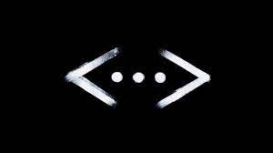

الحفرة
الحفرة هو مسلسل تركي درامي أكشن وجريمة وعصابات. إنتاج شركة القمر للإنتاج من بطولة أراس بولوت إينملي ديلان تشيتشيك دنيز أركان كولتشاك كوستنديل واونير اركان وإيرجان كيسال ورضا كوجا أوغلو وألبيران دويماز من الجزء الأول ونجيب ميميلي وتانسو بشار وبيركاي أتاش وأركان أوجي وبوراك داكاك من الجزء الثاني وجيهانجير جيهان وداملا سونماز وهازال سوباشي وباريش أردوتش من الجزء الثالث. تم الإعلان عن المسلسل في تاريخ 25 سبتمبر 2017، وتم عرضه على قناة شو تي في يوم 23 أكتوبر 2017.
معلومات
- النوع : إثارة , دراما , جريمة
- تأليف : جوكهان هورزوم
- إخراج : سنان أوزتورك
- البلد : تركيا
- لغة العمل : التركية
- عدد المواسم : 4
تصفح عن فلم الحفرة